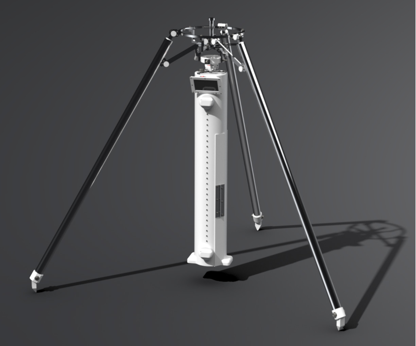
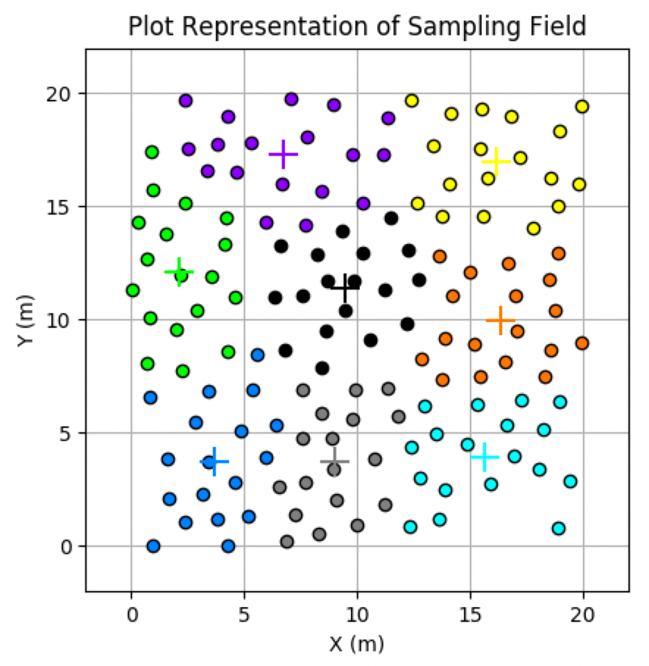
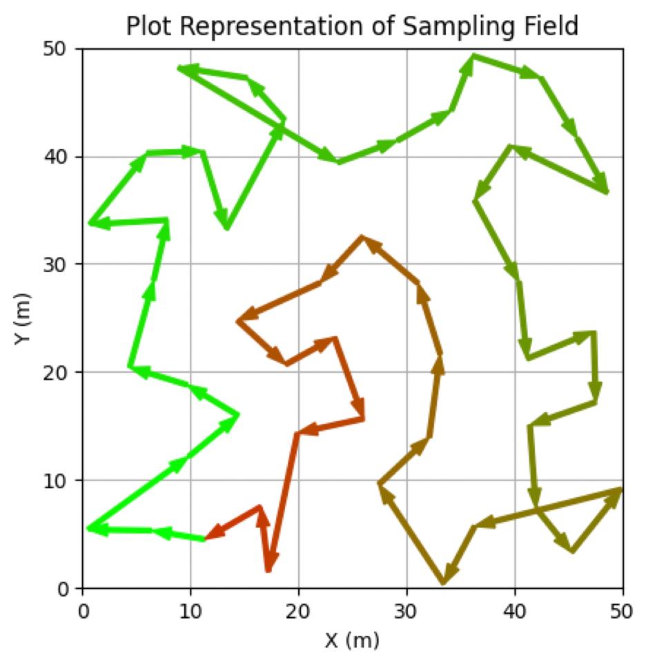

A course project required proposing a large-scale optimization problem that can utilize techniques learned in class to efficiently solve such problems. From a nonlinear controls course that I have taken in a previous quarter, I borrowed a problem from the textbook that involved a swarm of ground robots which uses a control safety function to ensure each robot avoids collisions with another. I applied Dykstra's projection algorithm to show that a significant improvement in computation speed is made thanks to optimizing the solving technique based on the problem characteristics.
An automated testbed was needed in lab to enable autonomous testing of a spine gripper sliding across a ground surface at various angles. A previous prototype made by a different graduate student had a lot of backlash in the system which made the FT sensor readings unreliable and inconsistent. I was asked to design and manufacture a second version of the system which fixes these existing issues.
2021



For my senior capstone project, I collaborated with 2 other electrical engineering major students and 4 mechanical engineering major students to design a semi-autonomous marshland soil core sampling robot used for land surveying. Although we were unable to build a physical robot due to the pandemic forcing the course to being remote, we were able to come up with an in-depth design concept that involved a software simulation that generates an optimal surveying route. This was computed by using the same size K-means clustering algorithm and the ant colony optimization to find a path that reduces the load on the user.
Inspired by the 3D maneuver gear that are used in the Attack of Titan anime/manga series, this conceptual robot utilizes launched wires that attach to walls/ceilings and uses swinging motion as its primary method of transportation. As the controls subsystem lead, I primarily overlooked the software for minimizing the oscillations of the robot while suspended on the cable and self-fixing its orientation when aiming its next launch.
This hexapod robot is inspired from the famous video game called The Legend of Zelda: Breath of the Wild. In the game, there is a six-legged mechatronic enemy creature called the Guardian which roams around the field with a freely-rotating head and a laser-shooting eye. The project attempts to recreate its in-game counterpart in aesthetics, functionality, and behavior. Being the targeting subsystem lead, I primarily contributed in designing and manufacturing an accurate laser targeting system. I also helped out figuring out the inverse kinematics of the hexapod and developed the control code alongside another student which allows for the walking and rotating motion.
Participated in the 2019 All American Micromouse Competition (AAMC) at UCLA, where me and my friend designed a mouse from scratch and developed our own maze-solving algorithm implemented on a STM32 chip. Out of 13 other participating teams coming from regional universities, we placed 5th and achieved an extra award for traversing the most number of cells within the maze.
Learned about basic circuitry and breadboard prototyping in class, and were tasked to assemble a line-following robot which relied on a pair of down-looking phototransistors which checked for the color of the ground it was passing over. We calculated the ideal resistor used in the voltage divider circuit to maximize the sensitivity, and even built an enclosure around the phototransistors to ensure no other environmental interferences affected its line-sensing capabilities. We also tuned our own PD controller which enabled a fast yet smooth drive, and we ended up ranking 1st place within our lab section during the competition we had on finals week.
2016
Built a total of 11 swarm robots which were individually simple in function, but collectively were able to accomplish a complicated task. Submitted to the 2015-2016 California State Science Fair and received 3rd place in the Electronics category.